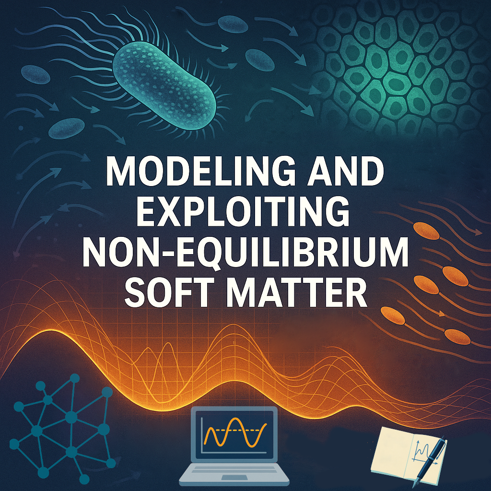

-
Gerhard Jung
Senior Scientist at University of Innsbruck
Funded by Austrian Science Fund
Project: Modeling and Exploiting Non-Equilibrium Soft Matter
Mail: gerhard.jung.physics[GMAIL]
Institut for Theoretical Physics
Technikerstraße 21A
6020 Innsbruck
Österreich 
-
My work spans a broad spectrum of research in the field of complex dynamics of soft matter systems using theory, computer simulations and machine learning.

Research Interests
-
Coarse-Graining Non-Equilibrium Dynamics

-
Kinetic Theory of Smart Matter

-

-
Other Topics
- Colloids and Glasses in Confinement
- Hydrodynamics
- Rheology
Recent Publications
Complete list of publications on Google Scholar
- Numerical investigation of the equilibrium Kauzmann transition in a two-dimensional atomistic glass
G. Jung, M. Ozawa, G. Biroli, L. Berthier, submitted (2025) - Kinetic theory of decentralized learning for smart active matter
G. Jung, M. Ozawa, E. Bertin, Phys. Rev. Lett. 134, 248302 (2025), Editors' Suggestion
https://link.aps.org/doi/10.1103/5m44-kwhv - Inhomogeneous diffusion in confined colloidal suspensions
G. Jung, A. Villada-Balbuena, T. Franosch, Soft Matter 21, 4010 (2025)
https://pubs.rsc.org/en/content/articlehtml/2025/sm/d5sm00120j - Roadmap on machine learning glassy dynamics
G. Jung, R. M. Alkemade, V. Bapst, D. Coslovich, L. Filion, F. P. Landes, A. Liu, F. S. Pezzicoli, H. Shiba, G. Volpe, F. Zamponi, L. Berthier, G. Biroli, Nature Review Physics (2025)
https://rdcu.be/d5qPx - Normalizing flows as an enhanced sampling method for atomistic supercooled liquids
G. Jung, G. Biroli, L. Berthier, Mach. Learn.: Sci. Technol. 5 035053 (2024)
https://iopscience.iop.org/article/10.1088/2632-2153/ad6ca0
Isn't it a noble and enlightened way of spending our brief time in the sun to work at understanding the universe and how we have come to wake up in it?
Richard Dawkins (also in "The Greatest Show on Earth", Nightwish)